Born to Fly, Not to Decorate
Birds are intelligent, sensitive, and highly social animals, yet they are often treated as decorations or objects. Many people keep birds without fully understanding their true needs.
Beyond the Cage was created to help change that.
This website is dedicated to educating bird owners about responsible bird care, including proper nutrition, enrichment, housing, and respect for birds as living companions.
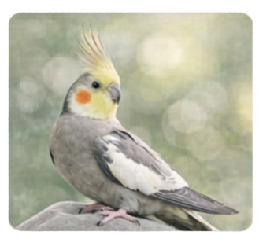
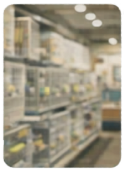
Why Beyond the Cage Exists
Many birds today live in environments that do not meet their physical or psychological needs. Birds in captivity often suffer from boredom, stress, and poor diets simply because people do not know how to care for them properly.
Beyond the Cage was created to provide clear and accessible information so that bird owners can understand what their birds truly need in order to live healthy and fulfilling lives.
The goal of this website is to encourage responsible bird ownership and remind people that birds are not decorations or toys. They are intelligent living creatures that deserve proper care, respect, and the freedom to express their natural behaviors.
My Story
The idea for Beyond the Cage began with an experience that changed the way I see bird ownership.
Bird Types
Learn about different companion bird species and how to care for them properly. Select a bird below to explore detailed information about its diet, behavior, care needs, and environment.
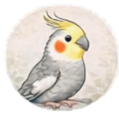
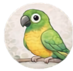
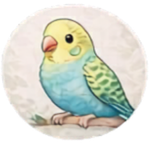
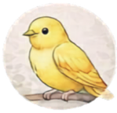
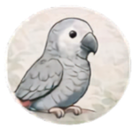
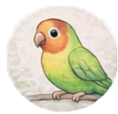
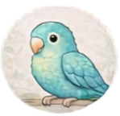
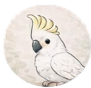
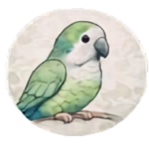
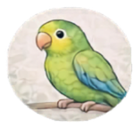
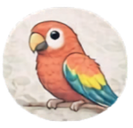
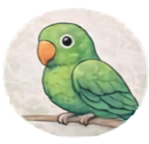
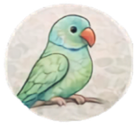
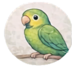
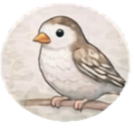
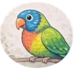